Zürich.Du öffnestdie Tür.
Dein Werkzeug für Zürich. Hier steht, was wir verkaufen, welche Häuser zu uns passen, wie ein Gespräch läuft, was es kostet und was du daran verdienst. Jede Website und jedes Werkzeug kannst du direkt aus diesem Papier öffnen und zeigen.
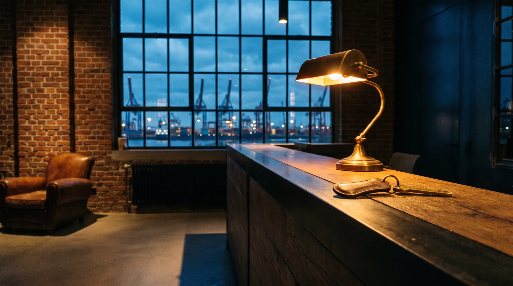
Tasty Studios · Digital HospitalityVier Teile.Sechzehn Kapitel.
Was wir verkaufen
Wer wir sind, was ein Haus bekommt und alles, was du zeigen kannst.
Wen du ansprichst
Welche Häuser in Zürich passen, wie du ins Gespräch kommst und wie ein Haus bis zur Wartung findet.
Das Gespräch
Wie ein Termin läuft, was es kostet, was gefragt wird, wie wir klingen und was du nie zusagst.
Wie wir zusammenarbeiten
Was du verdienst, wer was übernimmt und womit du anfängst.

Was wir verkaufen.
Website, sieben Werkzeuge und die Werkbank. Alles, was du hier liest, kannst du anklicken.Ein Partnerstatt sechs.
Tasty Studios baut für unabhängige Hotels und Restaurants die Website und das System dahinter: Marke, Website, Werkzeuge für das Team, Karten und Unterlagen, KI. Die Website ist der Teil, den der Gast sieht. Dahinter steht ein ganzes System für Gast und Betrieb, aus einem Guss und im Stil des Hauses.
Tasty Studios is a Digital Hospitality Studio.
Robert, 10.10.2026Aus einer Hand
Was ein Haus sonst bei Webagentur, Grafikbüro, SEO-Agentur und weiteren Firmen einkauft, entsteht bei uns an einem Ort und passt zusammen.
Aus dem Betrieb
Robert kommt aus Gastronomie, Expansion und Systembau, zuletzt Expansionsmanager bei der New York Bagel Bar. Anna Llorens aus Front Office, Event, F&B und Hoteldirektion. Wir kennen den vollen Abend von innen.
Kein Baukasten
Jeder Auftritt entsteht aus der Welt des einen Hauses. Bei der Familie Maeder sind es vier Häuser und vier völlig verschiedene Websites, die man trotzdem als eine Familie erkennt.
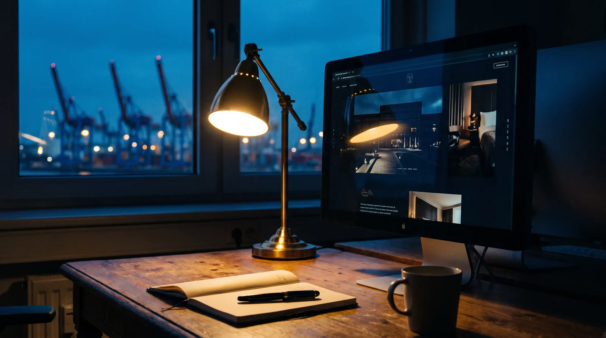
Das Studio · HamburgDaneben gibt es das Backoffice, ein Betriebssystem in Notion für die Küche und den Betrieb, und die Masterclass, in der Betriebe lernen, mit KI zu arbeiten. Beides ist der Beleg, dass wir Gastronomie von innen kennen. In Zürich verkaufst du Website und Werkzeuge.
Aus der Weltdes Hauses.
Die Website ist der Teil, den der Gast sieht. Sie entsteht für jedes Haus neu, aus seiner Geschichte, seinen Bildern und seiner Schrift.
- Gestaltet aus der Welt des Hauses. Schrift aus der Wortmarke, die echten Bilder des Hauses, eine eigene Geschichte von oben bis unten.
- Mit der Buchung verbunden. Das Buchungssystem des Hauses bleibt, die Website führt dorthin.
- Lesbar für Gäste und für KI. Die Angaben zum Haus stehen so auf der Seite, dass Google und ChatGPT sie richtig lesen.
- Mit Gäste-Chat. Auf der Website beantwortet ein KI-Gastgeber die Fragen der Gäste, das Team sieht jede Anfrage.
- In mehreren Sprachen. Das Carlton-Europe zum Beispiel auf Deutsch, Englisch und Französisch.
- Schnell auf jedem Gerät. Alle Bilder und die Schrift sind beim ersten Blick da, auch auf einem älteren Handy.
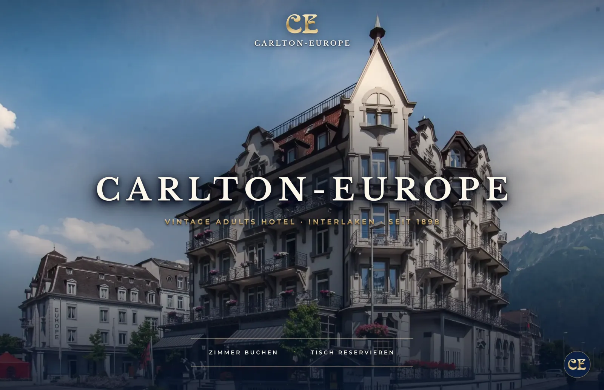
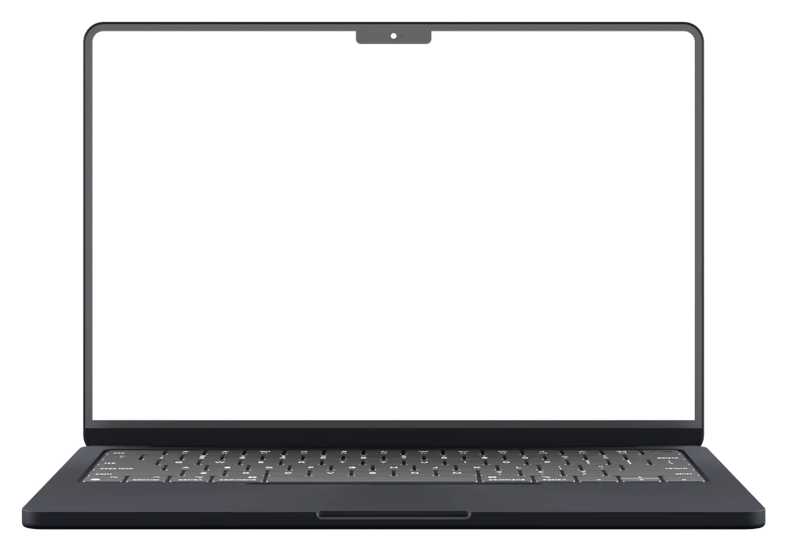
Sieben Werkzeuge,live zum Anklicken.
Mit den Werkzeugen hält das Haus seinen Auftritt selbst aktuell. Es bekommt sie nur im Abo mit der monatlichen Wartung. Klick links ein Werkzeug an, rechts siehst du es. Mit dem Knopf öffnest du die echte Demo im Carlton-Europe und kannst sie im Gespräch bedienen.
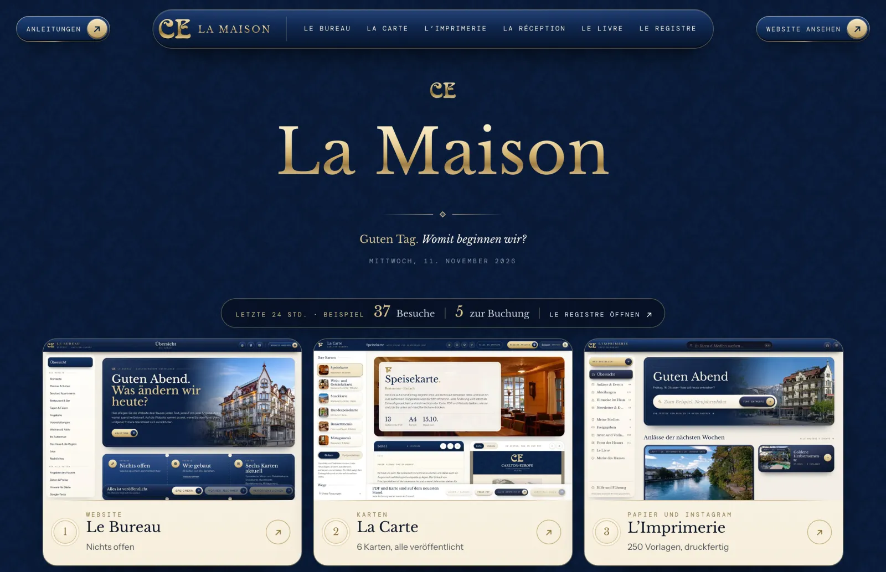
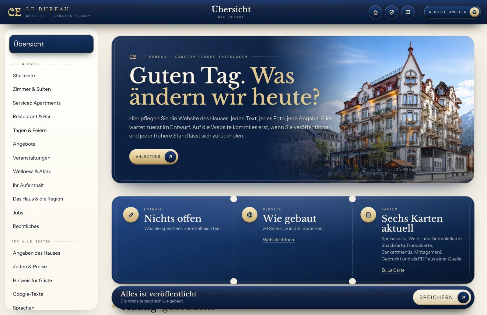
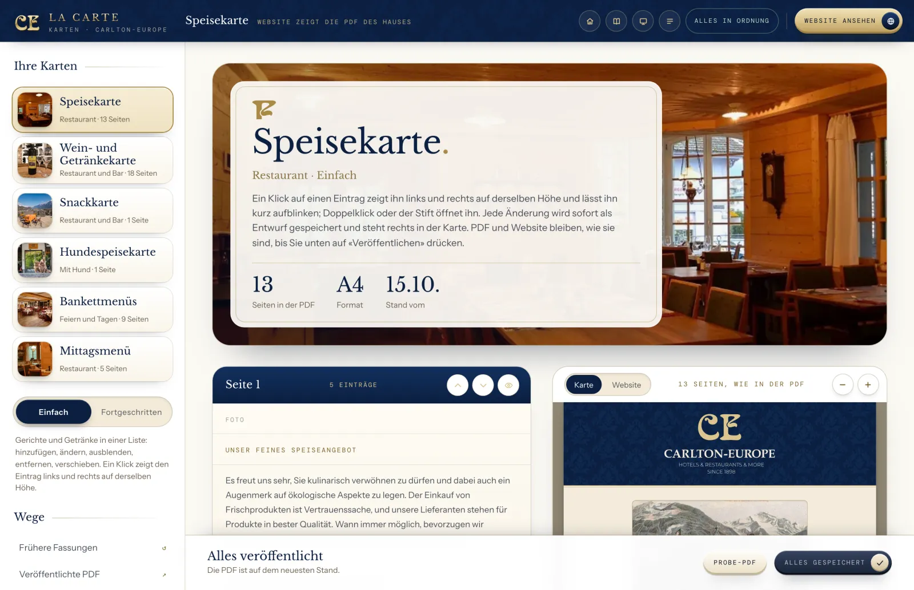
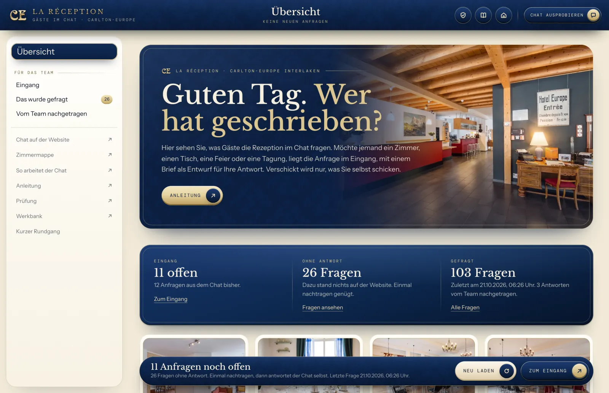
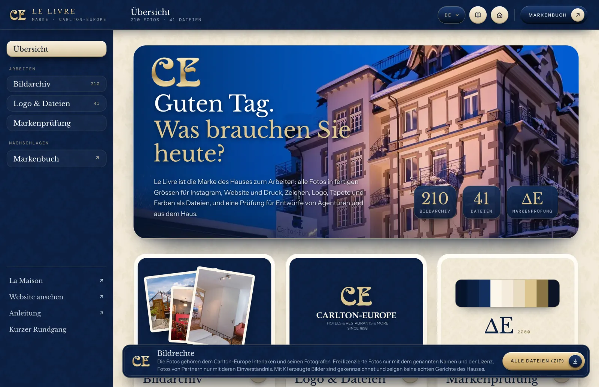
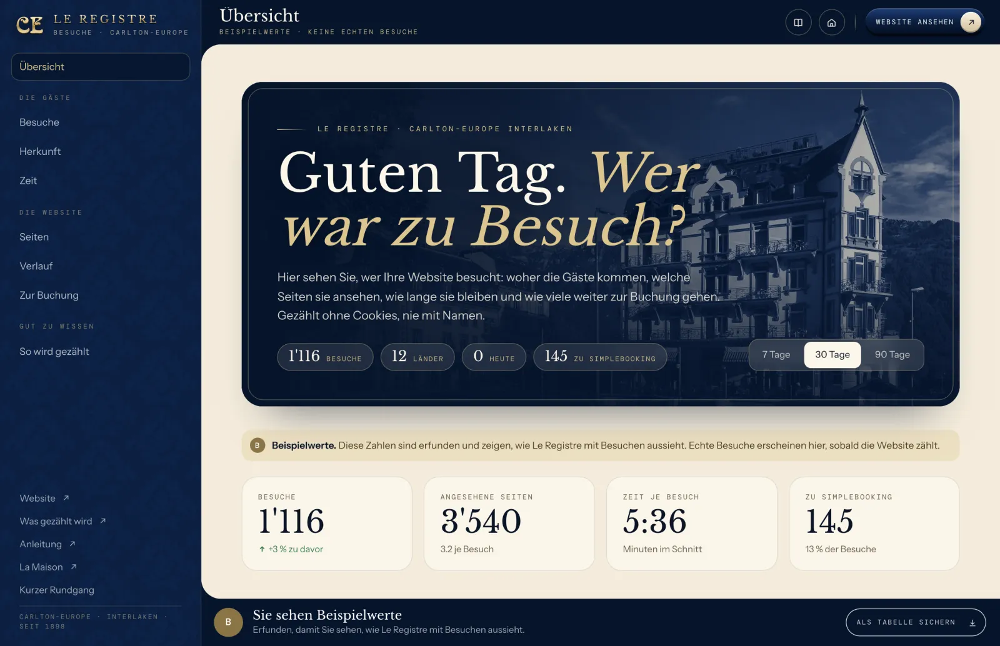
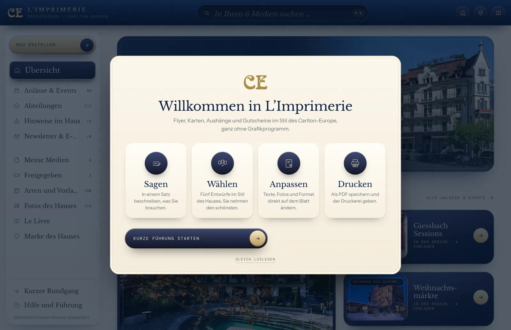
Im Carlton-Europe heisst es «La Maison». In jedem neuen Haus trägt es den Namen «Kontrollpanel».
In jedem neuen Haus heissen die Werkzeuge gleich. Meldet sich ein Haus, weiss jeder bei uns sofort, welches Werkzeug gemeint ist. Die Demos im Carlton tragen noch die Namen aus der Welt des Hauses.
Öffne vor dem ersten Termin jedes Werkzeug einmal selbst. Am stärksten im Gespräch: Karten & Preislisten, weil das Haus sieht, wie eine Änderung sofort auf Website und Druck-PDF landet.
Alles aneinem Ort.
Auf der Werkbank findet der Betreiber alles, was wir für sein Haus gebaut haben: seine Unterlagen und Drucksachen im neuen Stil, Mails für Gäste, Kofferetiketten oder Sticker, eine Vorschau seines Instagram-Feeds und eine Potenzialanalyse seiner heutigen Website.
Für das Gespräch ist die Werkbank das stärkste Stück. Das Haus sieht, wie weit wir schon für es gedacht haben, bevor es einen Franken bezahlt hat.
- Werkbank des Carlton-Europecarlton.tastystudios.ch/werkbank
- Unterlagen im neuen Stilcarlton.tastystudios.ch/unterlagen
- Drucksachencarlton.tastystudios.ch/drucksachen
- Instagram-Feed als Vorschaucarlton.tastystudios.ch/feed
- Kofferetikettencarlton.tastystudios.ch/kofferetiketten
- Material des Hausescarlton.tastystudios.ch/material
- Werkbank des Grand Beau-Rivagegrand-beau-rivage-entwurf.vercel.app/werkbank
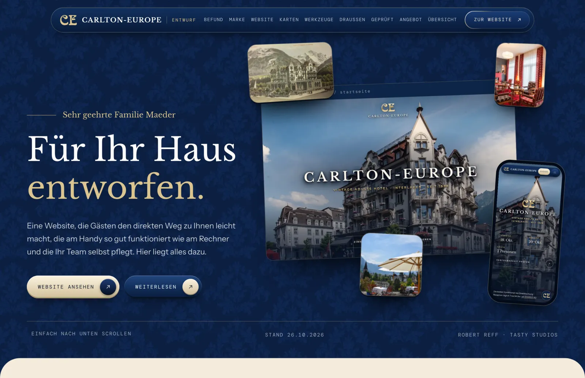
Die gebautenHäuser.
Ein Haus muss sich nichts vorstellen. Es klickt den fertigen Auftritt an. Zeig zuerst ein Haus, das dem Gegenüber ähnelt: einem Hotel das Grand Beau-Rivage oder das Carlton, einem Landgasthof das Ruedihus, einem Restaurant mit Auszeichnung das Schäfli.
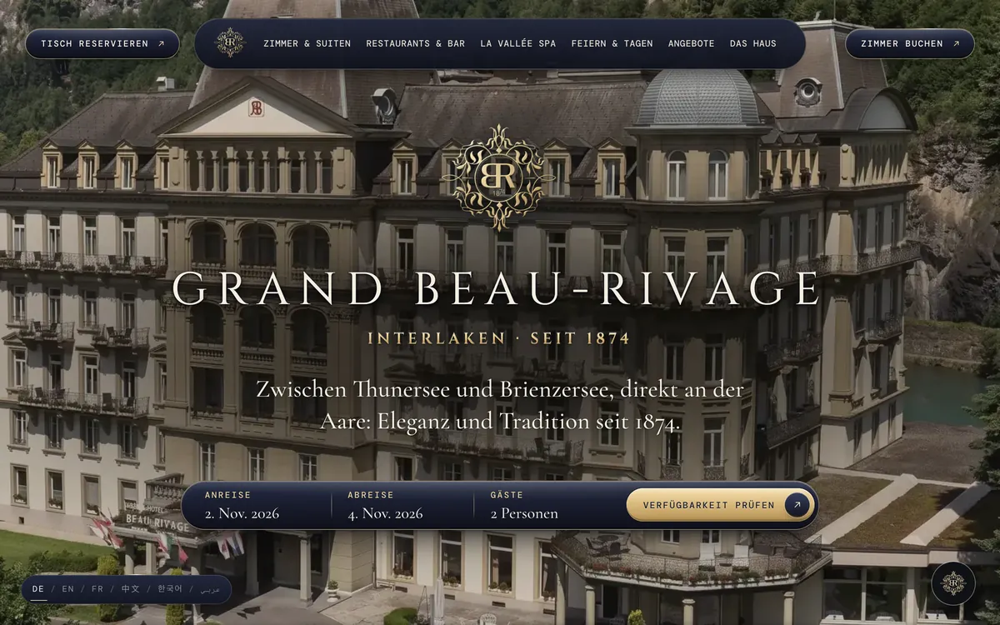


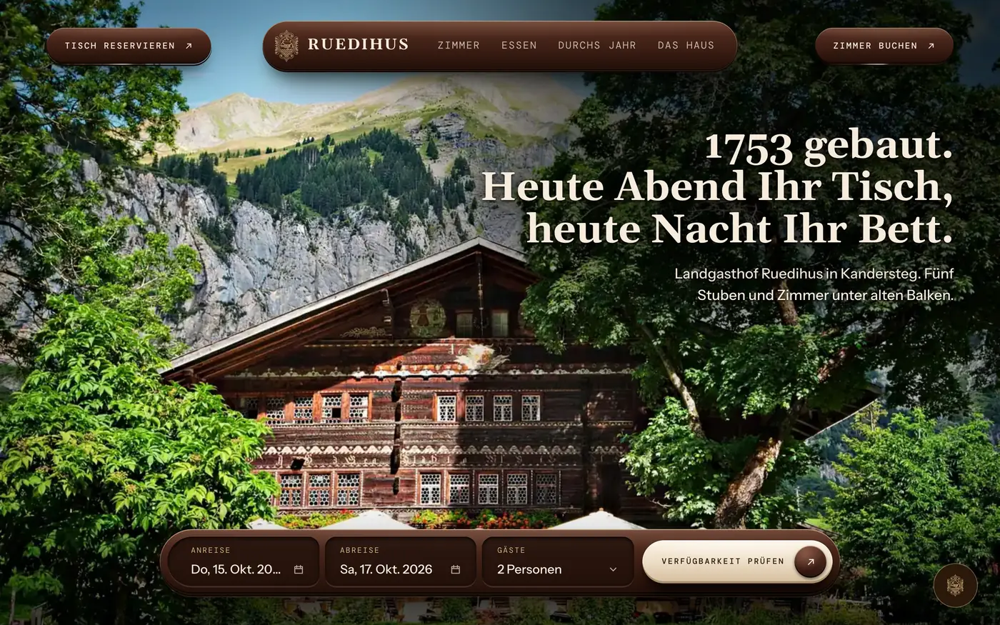
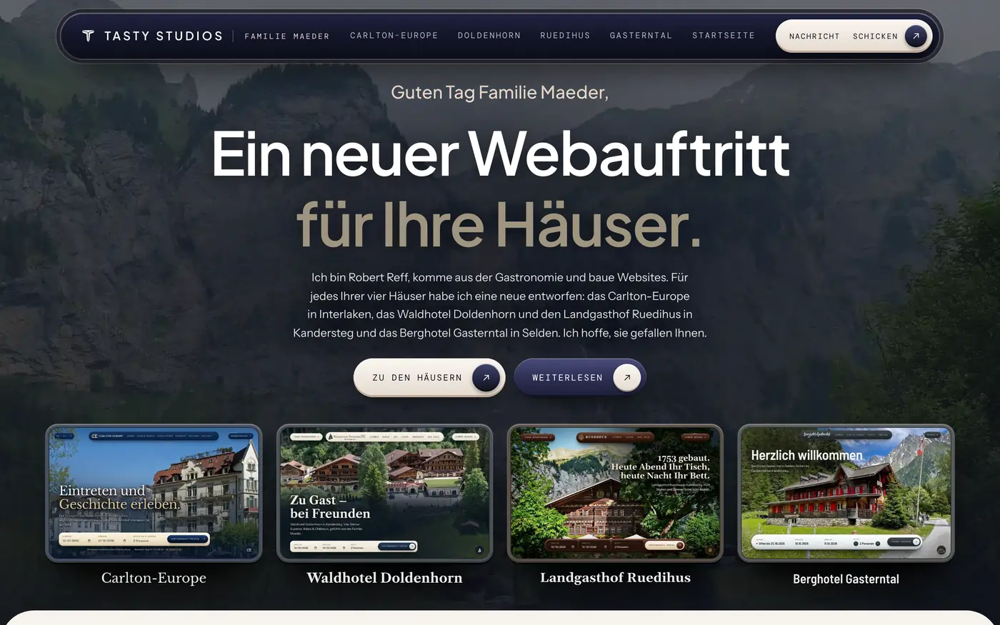
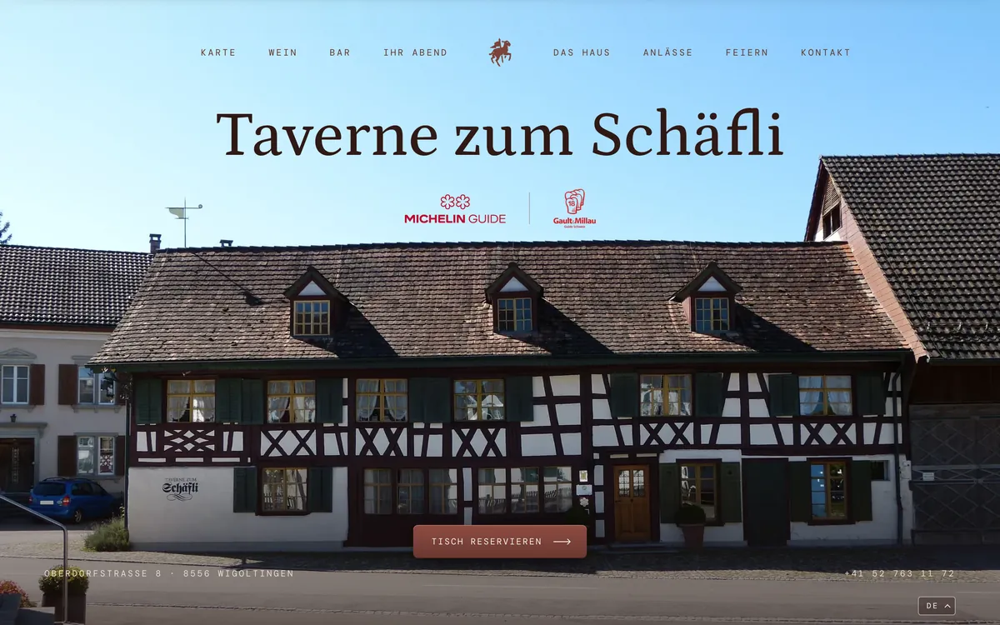
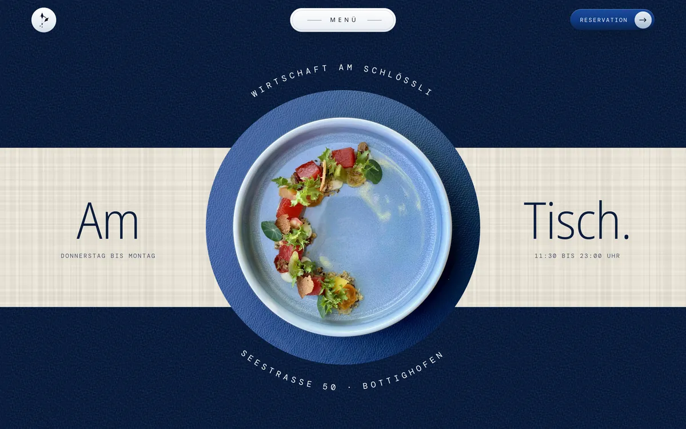


- Familie Maeder, vier Entwürfe mit Werkbänkenentwuerfe.tastystudios.ch
- Salt & Silver, Hamburgsalt-and-silver-studie.vercel.app
- Tasty Studios, unsere Websitetastystudios.vercel.app
- Die Werkzeuge auf unserer Websitetastystudios.vercel.app/werkzeuge
- Unsere Arbeiten im Überblicktastystudios.vercel.app/work
Culinarium und Walk on the Wild Side sind Kunden. Die anderen Häuser sind Designstudien: Wir haben sie gebaut, um zu zeigen, was für ein solches Haus möglich ist. Fragt jemand, sag es so.
Lass das Haus den Link auf dem eigenen Handy öffnen und selbst scrollen. Nicht erklären, solange es schaut. Die Frage danach ist wichtiger als jede Erklärung vorher: «Wie fühlt sich das für Ihr Haus an?»
Wen du ansprichst.
Welche Häuser in Zürich passen, wie du ins Gespräch kommst und wie ein Haus vom ersten Namen bis zur laufenden Wartung findet.
Welche Häuserpassen.
Unser Schwerpunkt ist die Schweiz. Dort gibt es viele sehr gute Häuser, deren Auftritt im Netz nicht zu ihrem Niveau passt, und die Bereitschaft, dafür zu zahlen. Zürich, der See und das Umland sind dein Gebiet.
- Es wird von einer Familie oder den Inhabern geführt, und du erreichst die Menschen, die entscheiden.
- Haus, Küche und Service sind sichtbar besser als die heutige Website.
- Es hat eine eigene Geschichte oder einen besonderen Ort, aus dem wir eine Welt bauen können.
- Eine KI gibt heute über das Haus falsche oder dünne Antworten. Das prüfen wir vorher.
Dein Netzwerk in Zürich zählt hier am meisten. Ein Haus, das dich kennt oder über jemanden von dir hört, öffnet die Tür leichter als ein Brief von Unbekannten. Fang bei den Häusern an, in denen du selbst gern Gast bist.
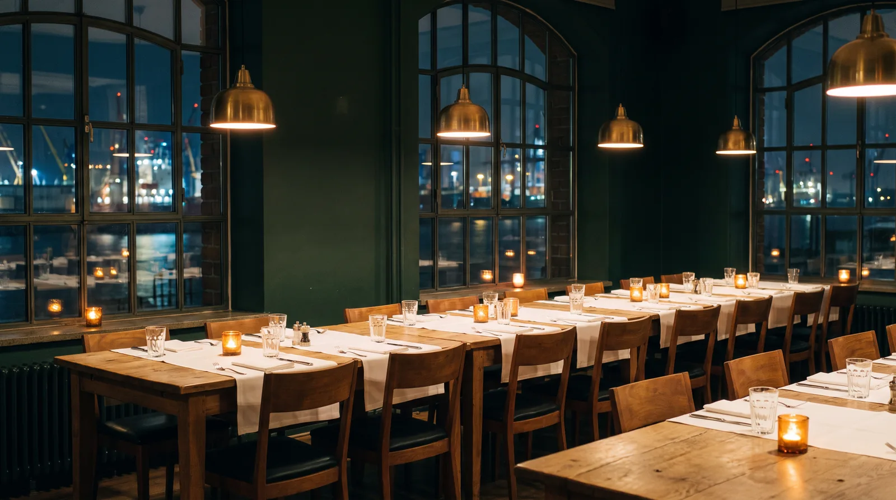
Das Haus ist besser als seine Website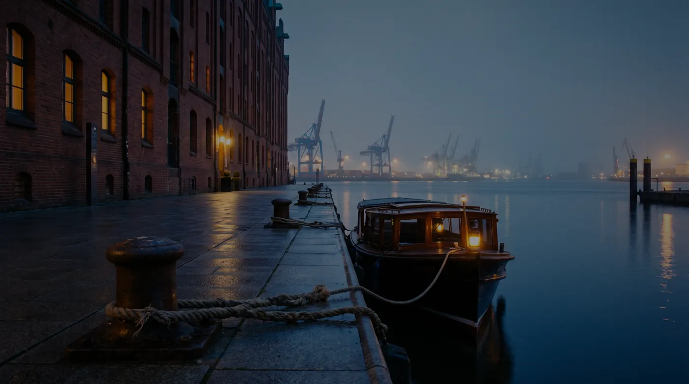
Gäste fragen heuteeine KI, bevor sie buchen.
Was die KIüber ein Haus sagt.
Anna hat es im Grand Beau-Rivage erlebt: Gäste fragten ChatGPT nach einem Hotel mit bestimmten Merkmalen in Interlaken, bekamen das Rivage empfohlen, kamen an und waren enttäuscht, weil die Antwort nicht der Wirklichkeit entsprach. Unter Hoteliers ist das gerade ein grosses Thema. Eine neue Website wird gern aufgeschoben. Eine falsche KI-Antwort trifft das Haus beim nächsten Gast.
Wir gehen über dieses Problem ins Gespräch. Der vorgebaute Auftritt ist die Lösung, die schon fertig daliegt.
Annas Gedanke, 30.10.2026Der KI-Check
- Wir stellen ChatGPT und Gemini die Fragen, die Gäste in der Region stellen, und halten fest, was über das Haus gesagt wird und was davon nicht stimmt.
- Wir prüfen, ob die heutige Website für eine KI lesbar ist.
- Das Ergebnis bringst du als kurzen Bericht mit, zusammen mit dem vorgebauten Auftritt, der die Lücken schliesst.
- Den Check macht Robert für jedes Haus, das du nennst, kostenlos und vor deinem ersten Termin.
Die Frage, mit der du anfängst
«Haben Sie schon einmal ChatGPT gefragt, was es über Ihr Haus erzählt?»
Die meisten haben es nicht. Dann zeigst du, was du mitgebracht hast.
Was wir bauen können und was nicht
Vom Namenbis zur Wartung.
Der Weg von einem Haus, das dir einfällt, bis zur laufenden Wartung. Du öffnest die Tür und führst das Gespräch, Robert baut und zeigt die Werkzeuge.
Wir bauen den Auftritt vor, zeigen ihn und reden erst dann über Geld.
Gilt seit dem 1. Oktober 2026Das Angebot ans Grand Beau-Rivage ging raus, bevor die Eigentümer wussten, was dahintersteht. Am 1. Oktober haben sie sich gegen den Neubau entschieden. Seitdem gilt die umgekehrte Reihenfolge, und die gilt auch für dich: erst zeigen, dann über Zahlen sprechen.
Sagt ein Haus nein, ist nichts verloren. Der Auftritt bleibt bei uns als Designstudie. Die Seite ist für Suchmaschinen gesperrt und nur über den Link erreichbar, den du dem Haus gibst.
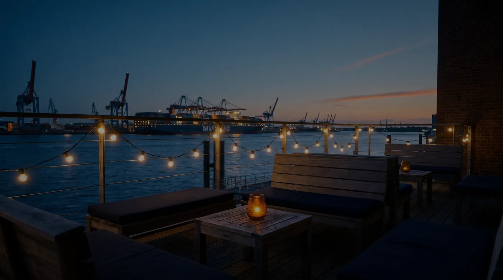
Das Gespräch.
Wie ein Termin läuft, was es kostet, was gefragt wird, wie wir klingen und was du nie zusagst.In fünfSchritten.
Ein Termin mit einem Haus braucht keine Präsentation. Du stellst Fragen, zeigst, was wir schon gebaut haben, und vereinbarst den nächsten Schritt.
 Erst zuhören, dann zeigen
Erst zuhören, dann zeigenHandy und Bericht
Den Link zum Auftritt des Hauses, den Bericht aus dem KI-Check und dieses Papier, damit du jedes Werkzeug direkt öffnen kannst.
Wer entscheidet
Sprich mit der Familie, dem Inhaber oder der Direktion. Ein Gespräch mit jemandem, der weitergeben muss, kostet einen Termin mehr.
Kurz an Robert
Am selben Tag drei Sätze an Robert: wie es ankam, welche Fragen offen sind und was als Nächstes vereinbart ist.
Was ein Hauszahlt.
Uns geht es vor allem um die monatliche Wartung. Die Website kostet einmal einen Festpreis, die sieben Werkzeuge gibt es nur im Abo zusammen mit der Wartung. Alle Beträge netto in Franken. Den Verbrauch der KI zahlt das Haus direkt beim Anbieter, so bleibt die Wartung ein fester Betrag.
Die Wartung ist das, worum es geht. Sie hält die Seite am Laufen und schaltet die sieben Werkzeuge frei.
Je nach Grösse
CHF 10'000 bis 15'000, je nach Grösse des Hauses und Umfang der Seite. Den genauen Betrag legt Robert im Angebot fest.
Die Werkzeuge
Die sieben Werkzeuge werden nie einzeln verkauft. Das Haus bekommt sie mit der monatlichen Wartung, solange die Wartung läuft.
Wir sind dabei
Server, Domain, Sicherungen, die sieben Werkzeuge und das aktuell gehaltene Wissen der KI. Wir reagieren sofort, wenn etwas ist, und Fehler beheben wir ohne Rechnung.
Website und Domain
Der Code der Website ist einmal geschrieben und danach Eigentum des Hauses, jederzeit. Das Haus darf ihn mitnehmen.
Erst die Wartung
Sprich zuerst über den Monatsbetrag und was er dem Haus bringt. Der Festpreis der Website ist der Einstieg, die Wartung die Zusammenarbeit.
Führt eine Familie mehrere Häuser, nennst du die Preise je Haus und sagst, dass Robert für die ganze Gruppe ein eigenes Angebot macht. Den Betrag dafür legt Robert fest.
Du nennst die Preise so, wie sie hier stehen. Nachlass, Sonderpreise oder Ratenzahlung nur nach Rücksprache mit Robert. Das verbindliche Angebot kommt immer schriftlich von uns.
Was gefragtwird.
Die Fragen, die in fast jedem Gespräch kommen, mit der Antwort, die stimmt. Was hier nicht steht, beantwortet Robert. «Das kläre ich und melde mich morgen» ist immer eine gute Antwort.
Das Haus soll spüren, dass seine Seite sicher ist. Sicherheitslücken stellen wir nicht als Risiko in den Raum, wer das ausführlich anspricht, macht es erst denkbar. Dass Sicherheit relativ ist und niemand abfangen kann, was keiner kommen sieht, sagst du fair, kurz und ohne Gewicht.
Wie wirklingen.
Ruhig, klar, ohne Show. Wir sprechen wie jemand, der den Betrieb kennt, nicht wie eine Agentur, die etwas verkaufen will. Mit den Häusern siezen wir, in Unterlagen auch.
 Jeder Satz hat einen Zweck
Jeder Satz hat einen ZweckJeder Satz wertet das Haus auf: Sorgfalt, Handarbeit, der einzelne Gast, der einzelne Teller. Zahlen nur als Exklusivität, wenige Plätze, nie als Menge, die abgearbeitet wird.
Wir sagen, was passiert: «Die Küche nimmt ein Gericht auf, und Website, Karte und Chat wissen es.»
Vokabular aus Handwerk, Küche und Haus. Keine englischen Tech-Namen und keine Kunstwörter.
Gäste fragen heute eine KI, bevor sie buchen.
Jeder Teller von Hand angerichtet.
Eine Website, die sich anfühlt wie das Haus.
Revolutionieren Sie Ihr Hotel mit KI!
Nur noch heute zu diesem Preis.
Vierzehn Teller, jeden Abend.
Was du niezusagst.
Ein Versprechen, das wir nicht halten, kostet mehr als ein verlorenes Haus. Bei allem, was hier steht, sagst du: «Das bespreche ich mit Robert.»
Jedem Gast seine Seite
Eine Website, die jedem Gast zeigt, was zu ihm passt. Daran arbeiten wir, versprochen wird sie erst nach einem erprobten Pilot.
Buchungs-App in ChatGPT
Eine eigene Buchung direkt im Chat von ChatGPT bauen wir nicht ohne Weiteres.
Platz eins
Weder bei Google noch eine bestimmte Antwort in ChatGPT. Wir machen das Haus lesbar, die Antwort gibt die KI.
Nachlass
Sonderpreise, Nachlass oder Ratenzahlung gibt es nur nach Rücksprache mit Robert.
Termin fürs Online-Gehen
Wann die Seite online geht, schreibt Robert ins schriftliche Angebot.
Angebot und Vertrag
Du unterschreibst nichts für Tasty Studios. Angebot und Vertrag kommen schriftlich von uns.
Du und wir.
Was du verdienst, wer was übernimmt und womit du in den ersten Wochen anfängst.
Was duverdienst.
Bei den ersten zwei Websites, die du abschliesst, bekommst du den Festpreis der Website. Davon gehen 10 Prozent ab für Roberts KI-Kosten. Alles, was danach kommt, besprechen wir noch.
So sieht das in Franken aus
Alles, was nach den ersten zwei Websites kommt, besprechen wir noch gemeinsam.
Wer wasübernimmt.
Du bist unser Gesicht in Zürich. Du kennst die Häuser, öffnest die Tür und führst das Gespräch. Wir bauen, zeigen die Werkzeuge und halten die Häuser danach am Laufen.
Ludwig
- Häuser auswählen und an Robert schicken
- Termine vereinbaren und das Gespräch führen
- Den Kontakt zum Haus halten, auch nach dem Abschluss
Robert
- KI-Check und Auftritt vorbauen
- Die Werkzeuge im Gespräch zeigen
- Angebot, Vertrag, Fertigstellen und Technik
Anna
- Ansprechpartnerin der Häuser in der Wartung
- Weiss bei jeder Meldung, welches Werkzeug gemeint ist
- Kennt die Schweizer Hotellerie von innen
Womit duanfängst.
Ein Rahmen für die ersten Wochen. Wie schnell es geht, bestimmst du.
Dieses Papier lesen, jedes Haus aus Kapitel 05 auf dem Handy durchklicken und jedes Werkzeug aus Kapitel 03 einmal öffnen.
Fünf Häuser aus Zürich an Robert schicken: Name, Website, wer entscheidet, warum es passt.
Robert macht für das erste Haus den KI-Check und baut den Auftritt vor. Du bekommst Link und Bericht.
Du führst das Gespräch, Robert ist per Video dabei. Danach besprechen wir, was wir an diesem Papier schärfen.
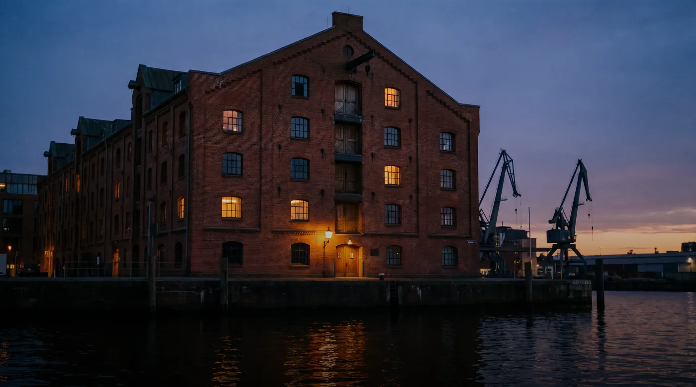
Erst zeigen,dann reden.
Internes Briefing für Ludwig. Nicht zur Weitergabe an Häuser. Fragen, die hier keine Antwort finden, gehen an Robert.